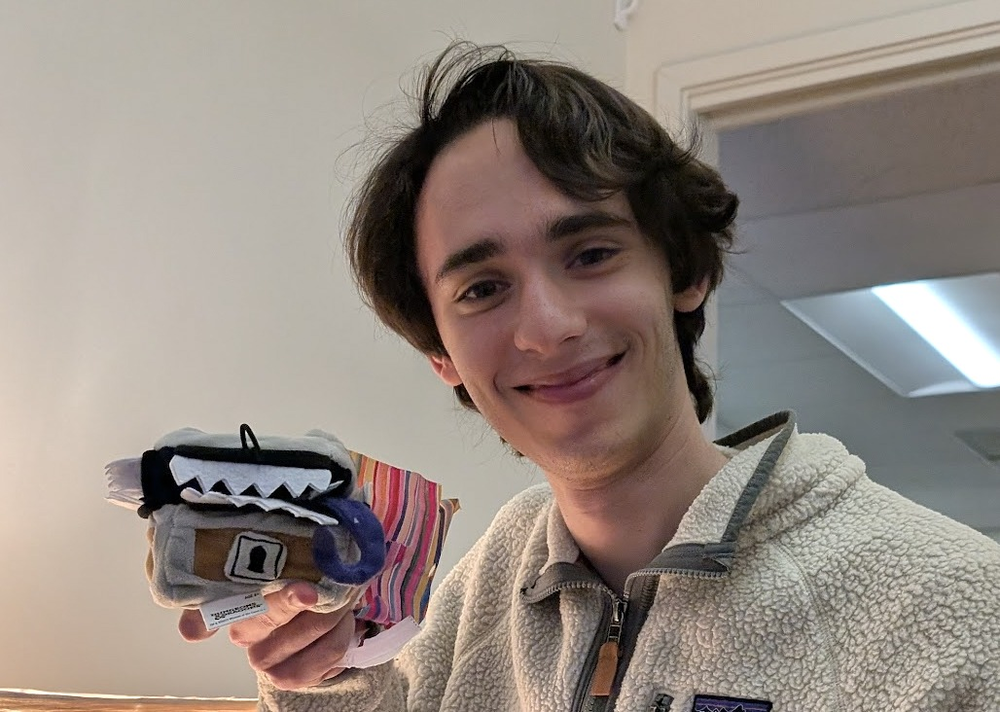

In NetHack, a mimic is a monster that survives by perfect imitation. It crouches in a dungeon room shaped exactly like a chest, or a fountain, or a coin, and waits. By the time you realize it isn't the object you thought, you are already in its mouth.

I was in California last week and managed to track down serteal, Alex Serrano, for a chat in Berkeley, where he is doing very interesting research in AI safety. We spent most of the time talking about his real work, as you would expect. But Alex is at the top of the NetHack contest leaderboard, so the contest did come up.
Alex's port is the first in the contest to imitate the C reference near-perfectly: 11,405/11,405 on the public sessions, and 10,424/11,265 on the held-out ones. His high performance on the held-out number proves how well the transpiler works. It's one thing to overfit to the published corpus; it takes a real mimic to match sessions it has never seen.
So I brought him an unofficial trophy: a small fuzzy mimic that looks like a chest but reveals a toothy grin and a tentacle-like tongue when you open it. Just the right size to hold a fistful of polyhedral dice. A holder for physical PRNG, pictured above.
This is not the real prize of the contest. Remember that Phase 1, which scores faithful imitation, is just a qualifier round. Phase 2, in December, will reward maintainable JavaScript that can absorb an updated target specification without being rewritten from scratch. A transpiled C state machine is a beautiful Phase 1 answer but vulnerable in Phase 2. Alex is very aware of that, and is cheerful about the challenge. So am I.
Congratulations to Alex for taking the first mimic home. Good luck to everyone in the contest creating more legible ports. The contest remains wide open.